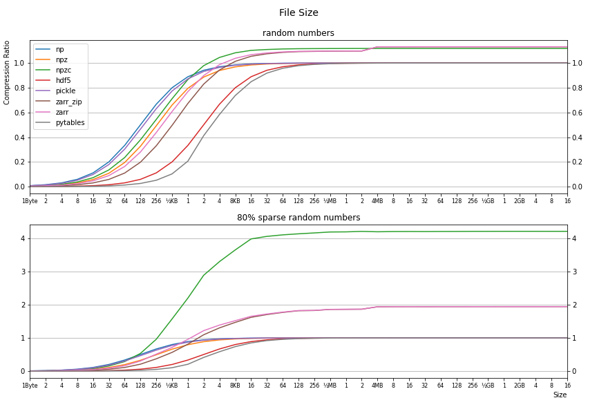
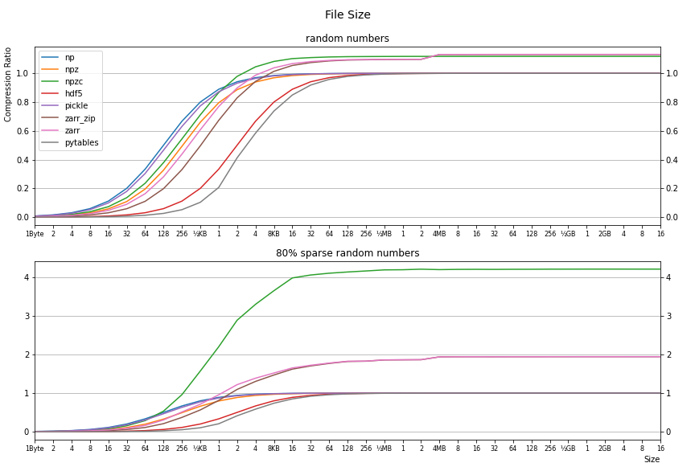

| numpy: | 1.22.0 |
| pickle: | 4.0 |
| h5py: | 3.6.0 (using hdf5 version: 1.12.1) |
| tables: | 3.6.1 (using hdf5 version: 1.12.1) |
| zarr: | 2.10.3 |
| Processor: | AMD Ryzen 9 5950X 16-Core Processor |
| Disk: | drive: C; type: NVMe; model: WD_BLACK SN850 1TB |
| Memory: | 128GB |
| OS: | Windows 10 (10.0.19044) |